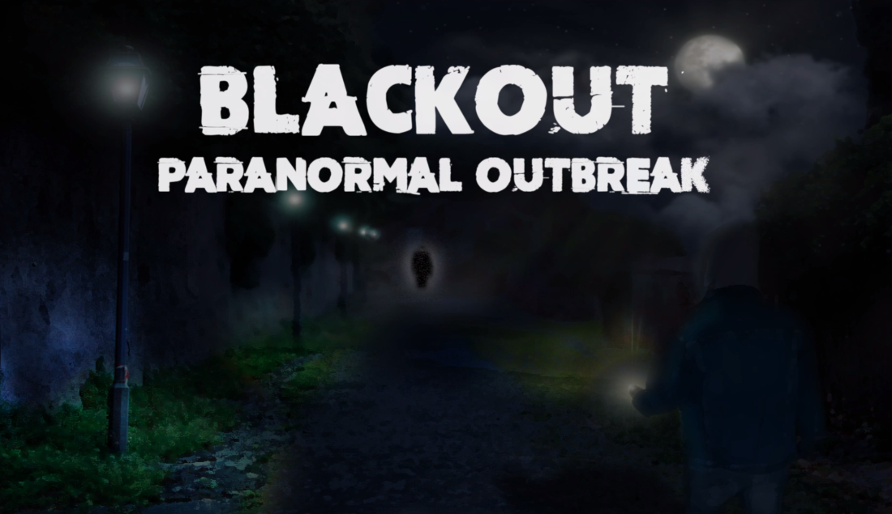

Blackout: Paranormal Outbreak
- Developed with our own Engine: BlackoutEngine
- Bullet3D, Raknet, OpenGL
- C++ scripting
- Blender3D and 3D Studio Max for models and UVMapping
- Almost all assets are original or by free license
- 6 team group; Oliver Rull Carlos, Padilla Lozoya Alejandro, Salieto Gómez Alberto, Sirvent Jerez Albert, Valls luna Ricardo and myself.
Trabajo en grupo usando el método de aprendizaje basado en proyectos (ABP) realizado en Ingeniería Multiemdia, Universidad de Alicante.
El proyecto consistía en realizar un videojuego en grupo, creando nuestro propio motor, motor gráfico, motor de red, mecánicas y todo lo relacionado con el mismo. Se podían usar librerías de apoyo mediante justificación. Para las físicas se utilizó Bullet3D, para la red Raknet, y para el motor gráfico OpenGL.
El juego no llegó a terminarse con éxito, pero se consiguieron bastantes de las metas propuestas así como un motor propio por componentes, una red funcional y el motor gráfico terminado completamente integrados dentro del motor.
Blackout es un juego de misterio/terror contra-operativo, en el que un grupo de investigadores tienen que encontrar pistas y resolver objetivos en un escenario, mientras intentan escapar de un Ente paranormal que intenta darles caza. Tanto los investigadores como el Ente son jugadores que cuentan con sus mecánicas particulares.
A continuación se muestran una seríe de videos e imágenes del desarrollo del trabajo.